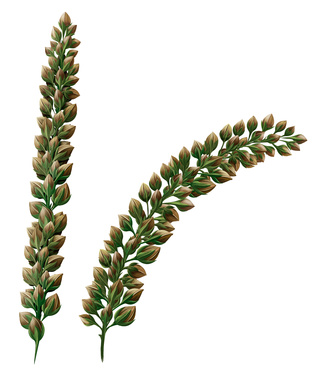

Buckwheat (Fagopyrum esculentum)

Mating & Breeding System: Most production of buckwheat in Canada takes place in Manitoba. Ontario grows buckwheat on about 6,000 acres.
Buckwheat has two different types of flowers – pin flowers and thrum flowers. Both have only one ovule. Pin flowers have short stamens with a long style, and thrum flowers have long stamens and a short style. A plant will usually produce only pin flowers or thrum flowers, mechanism that helps promote cross-pollination.
Stamens are organized in an inner and outer ring. An insect foraging for nectar must pass between the two rings and gets covered in pollen in the process. Depending on whether they are foraging on pin or thrum flowers, insect visitors will get pollen on the part of their body that is most likely to touch the stigma of the opposite flower type during foraging.
Self-fertilization is possible but likely rare. Pollen tube growth is inhibited if the pollen from a pin or thrum flower lands on the same type of flower, even if that flower is on a different plant.
Pollination, Quality & Yield: Under good growing conditions, buckwheat produces abundant nectar with a very high sugar content. However, some varieties bred for shatter-resistance (e.g., Koto) are nectar poor.
Honey bees are enthusiastic foragers of buckwheat flowers, and a highly desirable dark honey is produced by their efforts. n the absence of pollinators, seed yield is very low - only about 2-3% of the yield achieved when bees are present. Buckwheat flowers are attractive to many insects, many of which can be important in improving yield whether or not managed pollinators have access to the flowers.
Pollination Recommendations: In large fields and in areas where wild pollinators are lacking, it is advisable to add honey bees. The optimal stocking rate is estimated at 2-5 hives per hectare.
While buckwheat will benefit from multiple insect visits, pollen tube growth and fertilization tends to occur very quickly (i.e., in 5-20 minutes, depending on flower type). Honey bees work the flowers rapidly, spending only a few seconds at each, and thus probably saturate the field above these recommended stocking rates.
Other pollinators should still be encouraged, as honey bees tend to concentrate on thrum flowers (which produce more nectar), and they are not especially efficient at transferring pollen between thrum and pin flowers.
Much of the existing research on buckwheat pollination is from Europe and Russia. Modern varieties, which may have different degrees of self-compatibility and nectar production, should be studied under Ontario conditions. Buckwheat could have an important role as a high quality honey plant and as a source of nutrition for wild pollinators of all types servicing other crops.
References
Bjorkman, T. 1995a. The effectiveness of heterostyly in preventing illegitimate pollination in dish-shaped flowers. Sexual Plant Reproduction 8:143-146.
Bjorkman, T. 1995b. Role of honey bees (Hymenoptera: Apidae) in the pollination of buckwheat in eastern North America. Journal of Economic Entomology 88:1739-1745.
Cawoy, V., Deblauwe, V., Halbrecq, B., Ledent, J. F., Kinet, J.M., & Jacquemart, A.L. 2006. Morph differences and honeybee morph preference in the distylous species Fagopyrum esculentum Moench. International Journal of Plant Sciences 167:853-861
Cawoy, V., Ledent, J.F., Kinet, J.M., & Jacquemart, A.L. 2009. Floral characteristics associated with seed productivity in common buckwheat, Fagopyrum esculentum Moench. European Journal of Plant Science and Biotechnology 3(special issue 1):1-9.
Elagin, I.N. 1976. Role of bees in increasing yield and improving seed germination and crop qualities of hybrid buckwheat seed. In Kozin, R.B. (ed.) Pollination of Entomophilous Agricultural Crops by Bees. Amerind Publishing Company, New Delhi.
Free, J.B. 1993. Insect Pollination of Crops, 2nd edition. Academic Press.
Goodman, R., Hepworth, G., Kaczynski, P., McKee, B., Clarke, S., & Bluett, C. 2001. Honeybee pollination of buckwheat (Fagopyrum esculentum Moench) cv. Manor. Australian Journal of Experimental Agriculture 41:1217-1221.
Kevan, P.G. 1988. Pollination, crops and bees. OMAFRA publication 72.
Namai, H. & Fujita, Y. 1995. Floral characteristics associated with seed productivity in common buckwheat, Fagopyrum esculentum Moench. Current Advances in Buckwheat Research pp425-435.
Pausheva, Z.P. 1976. Comparative efficiency of different methods of hybridization of buckwheat. In Kozin, R.B. (ed.) Pollination of Entomophilous Agricultural Crops by Bees. Amerind Publishing Company, New Delhi.
Racys, J. & Montviliene, R. 2005. Effect of bees-pollinators in buckwheat (Fagopyrum esculentum Moench) crops. Journal of Apicultural Science 49:47-51.
Taki, H., Okabe, K., Makino, S., Yamaura, Y., & Sueyoshi, M. 2009. Contribution of small insects to pollination of common buckwheat, a distylous crop. Annals of Applied Biology 155:121-129.